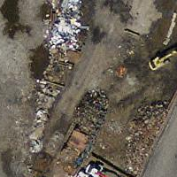
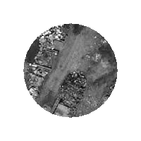
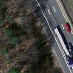
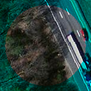

ST_Clip — 入力ジオメトリで切り取ったラスタを返します。バンドが指定されていない場合には、全てのバンドが返されます。cropが指定されていない場合には、TRUEと仮定され、出力ラスタをクロップします。
raster ST_Clip(raster rast, integer[] nband, geometry geom, double precision[] nodataval=NULL, boolean crop=TRUE);
raster ST_Clip(raster rast, integer nband, geometry geom, double precision nodataval, boolean crop=TRUE);
raster ST_Clip(raster rast, integer nband, geometry geom, boolean crop);
raster ST_Clip(raster rast, geometry geom, double precision[] nodataval=NULL, boolean crop=TRUE);
raster ST_Clip(raster rast, geometry geom, double precision nodataval, boolean crop=TRUE);
raster ST_Clip(raster rast, geometry geom, boolean crop);
入力ジオメトリgeomで切り取ったラスタを返します。バンドが指定されていない場合には、全てのバンドが処理されます。
ST_Clipが返すラスタは、バンド毎に一つずつ必ず切り取った領域に適用するNODATA値を持ちます。NODATA値が渡されず、入力ラスタがNODATA値を持たない場合には、結果ラスタのNODATA値はST_MinPossibleValue(ST_BandPixelType(rast, band))に設定されます。配列におけるNODATA値の要素数がバンド数より小さい場合には、配列の最後の要素が残りのバンドに適用されます。NODATA値の要素数がバンド数より多い場合には、超過分は無視されます。全てのNODATA値配列を受け付ける形式では、バンド毎に適用される単一値も受け付けます。
cropが指定されていない場合には、TRUEと仮定され、出力ラスタを geom範囲とrast範囲とのインタセクトした範囲にクロップします。cropがFALSEに設定されている場合には、新しいラスタはrastと同じ範囲になります。
Availability: 2.0.0
Enhanced: 2.1.0 C言語で記述されました
MassGISサイトMassGIS Aerial Orthosにあるマサチューセッツ空中写真データを使った例です。座標はメートル単位のマサチューセッツ州平面です。
-- 空中写真タイルの1番バンドを中心から20メートルのバッファで切り取ります
SELECT ST_Clip(rast, 1,
ST_Buffer(ST_Centroid(ST_Envelope(rast)),20)
) from aerials.boston
WHERE rid = 4;
--ラスタの最終的なピクセル範囲についてのクロップの効果のデモンストレーション
-- crop=trueでは、どのように最終的な範囲がジオメトリに切り取られるかをみます
SELECT ST_XMax(ST_Envelope(ST_Clip(rast, 1, clipper, true))) As xmax_w_trim,
ST_XMax(clipper) As xmax_clipper,
ST_XMax(ST_Envelope(ST_Clip(rast, 1, clipper, false))) As xmax_wo_trim,
ST_XMax(ST_Envelope(rast)) As xmax_rast_orig
FROM (SELECT rast, ST_Buffer(ST_Centroid(ST_Envelope(rast)),6) As clipper
FROM aerials.boston
WHERE rid = 6) As foo;
xmax_w_trim | xmax_clipper | xmax_wo_trim | xmax_rast_orig
------------------+------------------+------------------+------------------
230657.436173996 | 230657.436173996 | 230666.436173996 | 230666.436173996
|
 切り取り前の完全なラスタタイル
|
 切り取り後
|
-- 前の例と同じですが、
-- ST_AddBandは全てのバンドが同じピクセル範囲を持っている必要があるので
-- ST_AddBandを使えるようにするためcropをFALSEに設定しなければなりません
SELECT ST_AddBand(ST_Clip(rast, 1,
ST_Buffer(ST_Centroid(ST_Envelope(rast)),20),false
), ARRAY[ST_Band(rast,2),ST_Band(rast,3)] ) from aerials.boston
WHERE rid = 6;
|
 切り取り前の完全なラスタタイル
|
 切り取り後 - シュールですね
|